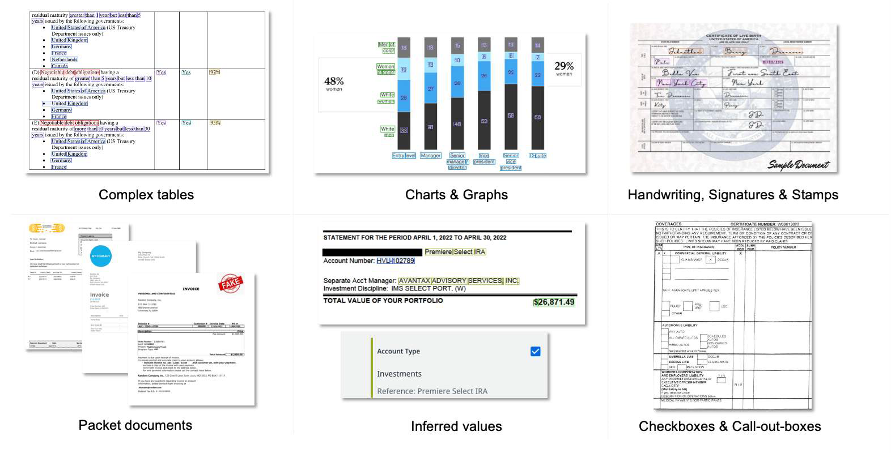

Part 2 : Generative Extractor in IXP
🎯 Learning Objectives
- Explain what IXP Generative Extraction is and which document types it is designed for
- Identify when to use IXP Generative Extraction vs. Document Understanding or Communications Mining
- Build a Generative Extraction project: create, upload documents, define taxonomy, validate predictions
- Evaluate model performance using precision, recall, and F1 metrics
- Publish and consume a Generative Extraction model in a UiPath Studio workflow
- Apply prompting best practices at project, field group, and field levels
Theory : Understanding IXP Generative Extraction
What is IXP Generative Extraction?
The Unstructured and Complex Documents capability in UiPath IXP uses Generative Extraction to process documents that are too complex or variable for traditional rule-based or template-based methods. It is an inference-first experience that provides zero-shot and few-shot extraction — meaning it can extract data from documents it has never seen before, guided purely by natural language prompts.
This capability converts unstructured document content into structured, actionable data for automation and analytics — without requiring ML model training or positional rules.

IXP Generative Extraction handles a wide range of complex document elements
When to Use IXP Generative Extraction
This capability is ideal for advanced document processing scenarios where data is not consistently formatted. Use it when one or more of the following apply:
Complex Document Elements
Documents contain paragraphs of free-form text or complex elements such as:
- Complex tables — nested, merged cells, multi-level headers
- Graphics and Charts — bar charts, pie charts, embedded images with data
- Checkboxes and Call-out boxes — form-style elements with contextual values
- Signatures, Stamps, and Handwriting — non-digital content that varies per document
Inferred Values
You need to extract inferred values — information that is not stated directly in the document but must be derived from context. For example, calculating net pay from gross pay and deductions, or determining account type from surrounding text.
High Layout Variation
There is high variation in layout or structure between documents, or within the fields to be extracted. Different employers, vendors, or agencies may use entirely different formats for the same document type.
Packet Documents
You are dealing with stacks of multiple document types combined as one file and need to extract data without splitting them up first. IXP can process these packet documents in a single request.
User Roles in Generative Extraction
| Role | Permissions |
|---|---|
| IXP Service Admin | Manage service settings, create projects, assign all roles |
| IXP Project Admin | Manage specific project, assign project-level roles |
| IXP Developer | Build, annotate, train, and publish models |
| IXP Model Trainer | Annotate documents and validate predictions |
| IXP Analyst | View project stats and performance metrics |
| IXP Viewer | View-only access to projects and results |
Practical : Building, Evaluating & Consuming
Building the Generative Extraction Project
Building a Generative Extraction project follows the same Build → Measure → Publish lifecycle as Modern DU projects, but uses generative AI prompts instead of annotated ML training.
Step 1: Create a New Generative Extraction Project
- Log into cloud.uipath.com and navigate to the Generative Extraction service
- Click New Project — choose Blank Project or a Template
- Give the project a name (e.g., Paystubs Extraction) and description
- Projects can only be created by an IXP Service Admin
Step 2: Upload Sample Documents
- Upload a representative sample of documents covering all layout variations
- Supported formats: PDF, PNG, JPG/JPEG, TIF/TIFF
- You can filter documents by annotated/unannotated status and search by document name
- No minimum number of documents required to start — predictions appear immediately
Step 3: Define the Extraction Schema (Taxonomy)
- Go to Manage Taxonomy
- Write a project-level instruction — describe the document type and industry context
- Click New Field Group — give it a name and instruction (e.g., "Employee Information")
- Add individual Fields within each group — specify name, data type, and instruction
- For hierarchical data, use
>in field group names (e.g., Paystub > Deductions)
Step 4: Review and Validate Predictions
- Once schema is defined, the AI immediately generates predictions for all uploaded documents
- Review each document — check if predictions are correct
- Modify prompt instructions and observe the impact on prediction quality
- Accept correct predictions or correct wrong ones to build ground truth
- Validated documents become the basis for performance evaluation in the Measure phase
Evaluating the Project (Measure Phase)
The Measure phase evaluates how well your model is performing before you deploy it to production. It uses your validated annotations as the ground truth.
Key Performance Metrics
- Project Score — overall model performance across all fields
- Precision — of all values the model extracted, how many were correct
- Recall — of all values that should have been extracted, how many did the model find
- F1 Score — harmonic mean of precision and recall; best single measure of performance
- Per-field performance — identify which specific fields need improvement
Comparing Model Versions
Every time you change the extraction schema or validate more documents, Generative Extraction creates a new model version. In the Measure phase you can:
- Compare model versions side by side
- See field-level performance differences between versions
- Identify which fields need more annotation or better prompt instructions
- Decide which version is best suited for production deployment
How to Improve Performance
- Refine field instructions — be more specific about expected format and edge cases
- Add more validated annotation examples (few-shot)
- Review low-scoring fields and adjust prompt wording
- Ensure the project-level instruction accurately describes the document type
- Annotate more diverse document samples to cover edge cases
Consuming the Generative Extraction Project in Studio
Once your model meets performance criteria, publish it and integrate it into a UiPath Studio workflow.
Step 1: Publish the Model
- Go to the Publish tab in your Generative Extraction project
- Select the model version to deploy (based on your Measure results)
- Add deployment tags to identify the version (e.g., v1.0-production)
- Click Publish — the model becomes available as an API endpoint
- Copy the project ID / endpoint details for use in Studio
- To roll back, simply publish a previous model version
Step 2: Integrate in Studio Workflow
- Install
UiPath.DocumentUnderstanding.Activitiespackage in Studio - Add a Document Understanding Scope activity and connect to your Generative Extraction project
- Add Extract Document Data — pass the file path of each document
- Access extracted fields from the returned
DocumentDataobject - Add Present Validation Station for human-in-the-loop review if confidence is below threshold
- Export validated results to Excel, database, or downstream system
Supported Document Limits
| Parameter | Limit |
|---|---|
| Maximum document length | 150 pages (use DU with RAG for longer documents) |
| Supported file formats | PDF, PNG, JPG/JPEG, TIF/TIFF |
| AI infrastructure | Specialized UiPath models + Azure OpenAI LLMs (data residency maintained per region) |
Best Practices : Prompting for Generative Extraction
Generative Extraction Prompting Best Practices
The quality of your prompts directly determines extraction accuracy. Well-written instructions unlock the full potential of the generative model.
Project-Level Instructions
- Briefly describe the industry and document type (e.g., "This is a US payroll paystub from the HR/Finance industry")
- Mention any special characteristics of the document (multi-page, scanned, handwritten sections)
- If the document may contain multiple instances of the same data, include a unique identifier field in every field group
Field Group-Level Instructions
- Choose clear, recognizable names — use the same terminology as in the documents
- Group related data points together logically
- Explain how the field group contributes to the document's overall meaning
- Indicate the likely location or section in the document (e.g., "Found in the top-right header section")
- Treat each field group as a table — each field is a unique column
- Use
>to create parent-child relationships (e.g., Paystub > Deductions)
Field-Level Instructions
- Start every instruction with "Extract…"
- Specify the exact format and structure of the expected output (e.g., "Extract as DD/MM/YYYY")
- Provide example inputs and expected outputs for complex or ambiguous fields
- Focus on one piece of data per instruction — don't overload a single field
- Select the appropriate data type: Text, Number, Date, or Boolean
- For inferred fields, describe the derivation logic (e.g., "Extract net pay — calculated as Gross Pay minus total deductions")
General Prompting Rules
| Rule | Guidance |
|---|---|
| Clarity & Simplicity | Use clear, direct, unambiguous language. Avoid complex nested sentences. |
| Consistency | Use the same terminology across project, field group, and field instructions. |
| Provide Context | Give the model relevant industry and document-type context at the project level. |
| Iterate | Write → Test → Edit → Save. Repeat until extraction quality is satisfactory. |
| Avoid Negative Instructions | Instead of "Don't skip sections", say "Ensure all earnings sections are captured". |
| Avoid Repetition | Repeating instructions across levels causes confusion and reduces accuracy. |
| Avoid Contradictions | Ensure project, field group, and field instructions do not conflict with each other. |
| Positive Examples | Include examples of correct responses to guide the model (few-shot). |
✅ Knowledge Check
1. What is the difference between zero-shot and few-shot extraction in Generative Extraction?
2. Which of the following is a field-level prompting best practice in Generative Extraction?
3. How do you consume a published Generative Extraction project in UiPath Studio?